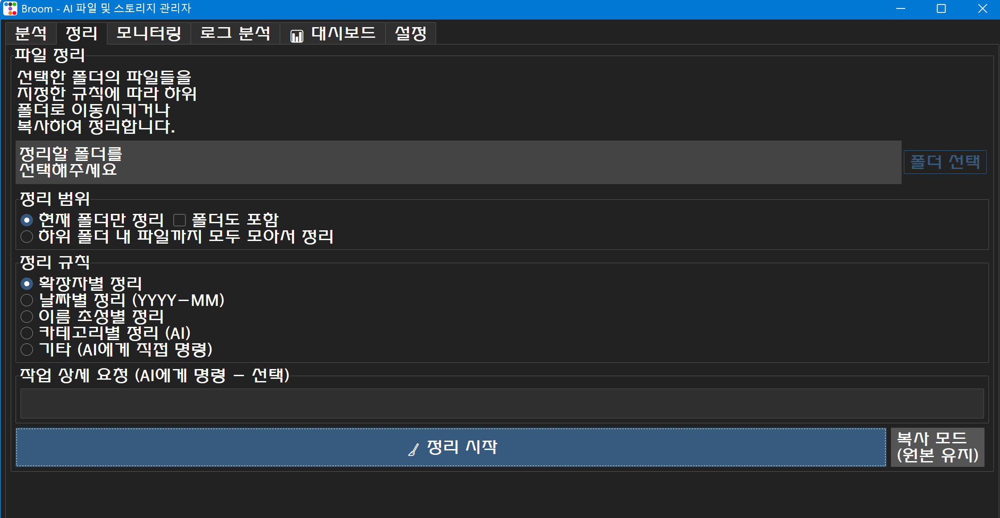
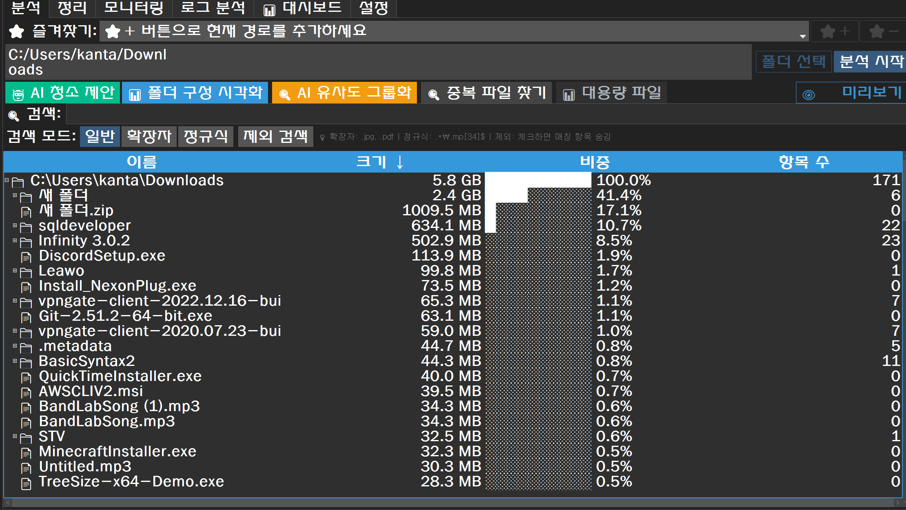
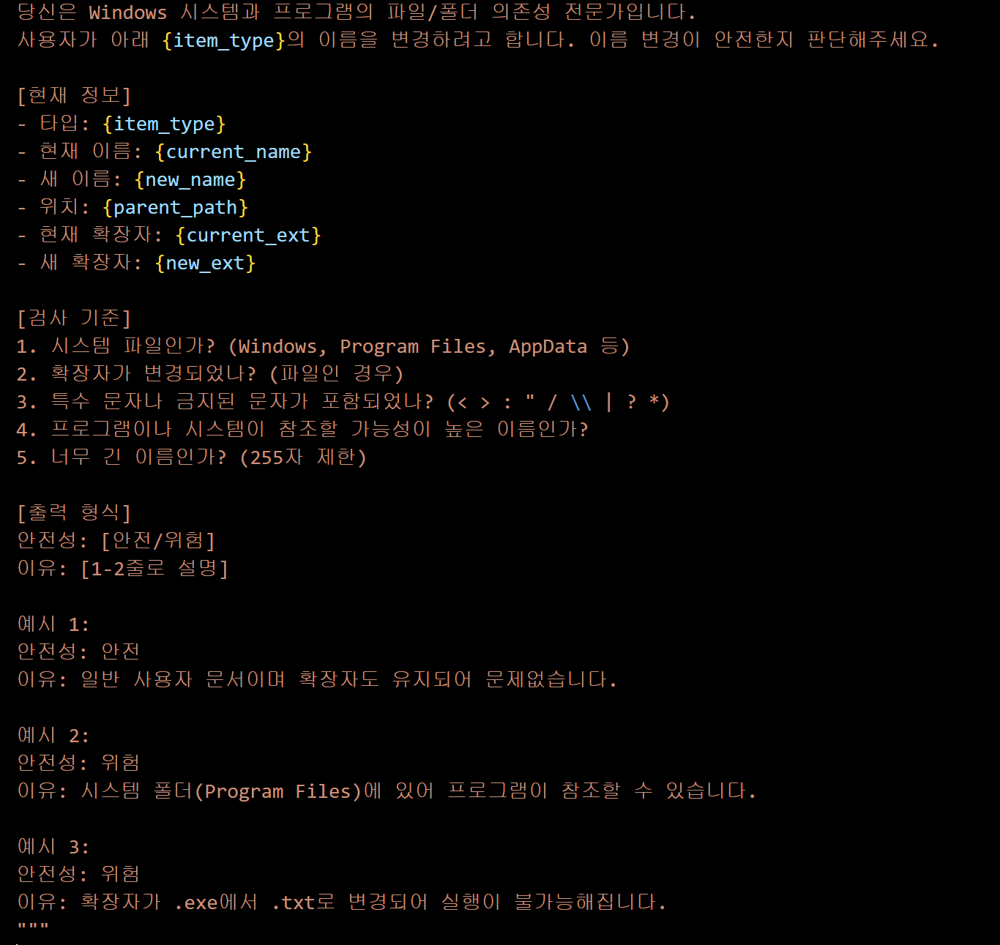
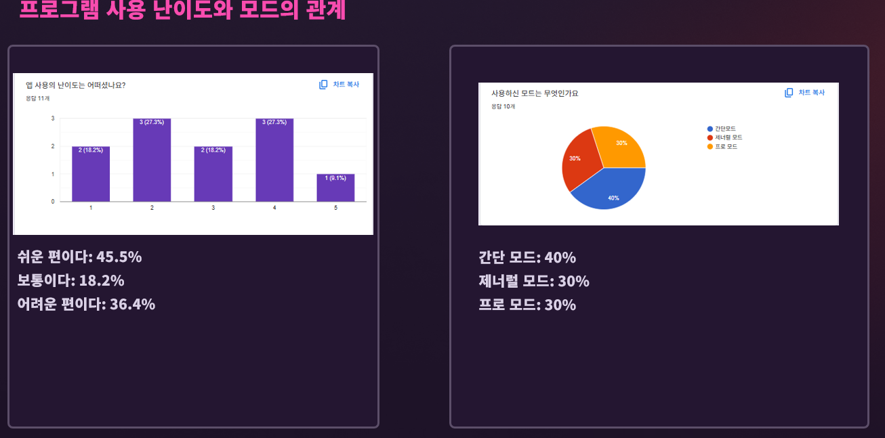
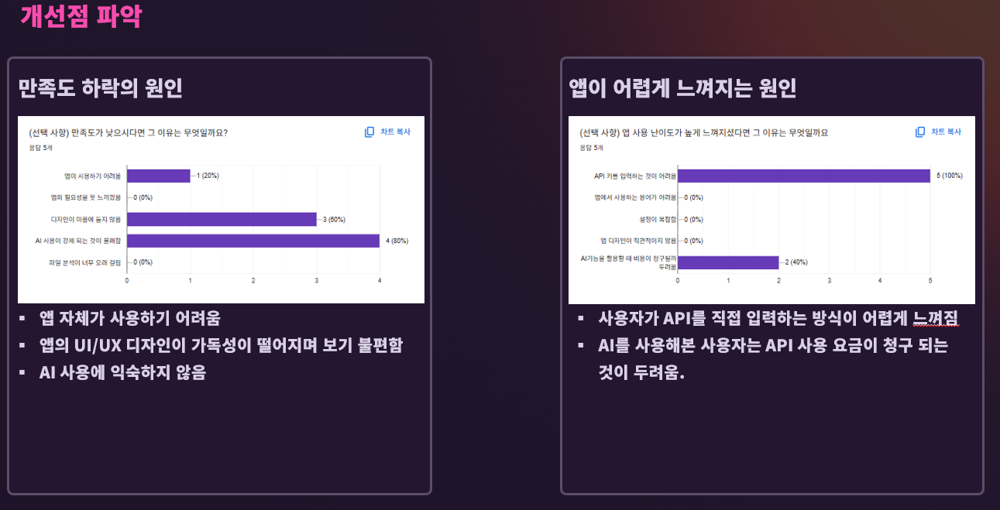

프로젝트 개요: Broom 🧹
문제 정의
Windows 데스크탑 사용자는 '다운로드'나 '바탕화면' 폴더에 누적되는 수천 개의 파일을 수동으로 관리해야 하는 비효율을 겪습니다. 기존 클리너 앱은 스캔 속도가 느리거나, 사용자가 신뢰할 수 없는 '블랙박스'처럼 동작하는 문제가 있었습니다. 또한, 파일 및 데스크탑 지식이 부족한 사용자에게 친화적이지 않으며 중요한 파일을 실수로 삭제하는 등의 문제가 발생하기도 했습니다. Broom은 AI 기반 지능형 자동화와 투명한 로깅 시스템으로 이러한 문제를 해결합니다.
아키텍처 / 설계
AI 기반 자동화와 안정성이라는 두 가지 핵심 가치를 중심으로 하이브리드 아키텍처를 설계했습니다.
- 멀티-스레드 스토리지 분석: Python의 threading과 queue를 활용한 비동기 스캔 시스템으로 GUI 응답성을 유지합니다.
- 지능형 서비스 (AI): ai_services.py를 중앙 허브로 두어, 파일 정리, 로그 분석, 캐시 감지 등 모든 AI 기능이 Gemini API를 호출하도록 설계했습니다.
- 백그라운드 자동화 (Python): watchdog과 schedule 라이브러리 기반 스레드가 메인 GUI와 독립적으로 동작합니다.
시연 영상
▲ 영상을 재생하여 Broom의 실제 동작 모습을 확인해보세요.
핵심 기능
멀티-스레드 스토리지 분석
비동기 큐 기반 실시간 스캔

대용량 드라이브 분석 시 GUI가 멈추는 문제를 해결하기 위해, threading과 queue를 활용한 비동기 스캔 시스템을 구현했습니다.
Python Path.iterdir() 기반으로 한글 경로를 완벽하게 지원하며, 메인 스레드를 차단하지 않고 스캔 결과를 실시간으로 UI에 스트리밍합니다.
AI 기반 지능형 자동화
Gemini API 중앙 허브 구조

단순 규칙 기반 정리를 넘어, ai_services.py 중앙 허브를 통해 Gemini API 기반 '지능형' 기능을 구현했습니다.
- AI 커스텀 파일 정리: "스크린샷만 모아줘" 같은 자연어 명령 자동 수행
- AI 캐시 자동 감지: 설치된 프로그램의 캐시 경로 패턴 자동 추론
- AI 로그 요약: 로그 세션을 분석하여 자연어로 인사이트 제공
사용자 평가 및 결과
배포 대상 및 전반적 만족도
총 11명의 사용자를 대상으로 진행한 설문 결과, 주 사용자층은 20대(90.9%)였으며 IT 전공자와 비전공자의 비율은 거의 비슷했습니다.
앱의 전반적인 만족도는 5점 만점 기준 72.7%가 5점을 부여하여 매우 높게 나타났으며, 활용도 역시 높은 편으로 평가되었습니다.
사용 난이도 및 모드 활용 분석
사용 난이도에 대해서는 '쉬운 편이다'(45.5%)라는 응답이 가장 많았으나, '어려운 편이다'(36.4%)라는 의견도 상당수 존재하여 개선의 필요성이 확인되었습니다.
사용 모드는 '간단 모드'(40%)가 가장 많이 사용되었고, '제너럴 모드'와 '프로 모드'가 각각 30%로 균형 있게 사용되었습니다. 이는 사용자 수준별 모드 제공 전략이 유효했음을 시사합니다.
주요 긍정 피드백
가장 좋았던 기능으로는 '파일 정리 기능', '폴더 분석', 그리고 'AI 유사도 기반 파일 분류 기능' 등이 언급되었습니다.
개선점 및 원인 분석
- **가장 큰 진입장벽:** 사용자가 직접 API 키를 입력해야 하는 방식이 어렵게 느껴진다는 의견이 지배적이었습니다 (100%).
- **기타 원인:** AI 사용 자체에 대한 익숙지 않음(80%), 디자인 불만족(60%) 등이 만족도 하락의 원인으로 지적되었습니다.
기타 자유 의견 (피드백5.png)

다운로드
Broom v1.0.0 for Windows
- Windows 10/11 (64-bit)
- 설치 불필요 (압축 해제 후 실행)
- MIT License (무료 오픈소스)
기술 스택
Desktop GUI
Core & AI
역할 및 회고
구현 및 성과
- Python GUI 앱에서 멀티-스레딩과 큐를 활용한 비동기 처리 패턴 적용
- Gemini API를 활용한 '로그 요약', 'AI 캐시 감지' 기능 구현
- Watchdog을 이용한 백그라운드 자동 파일 모니터링 시스템 구축